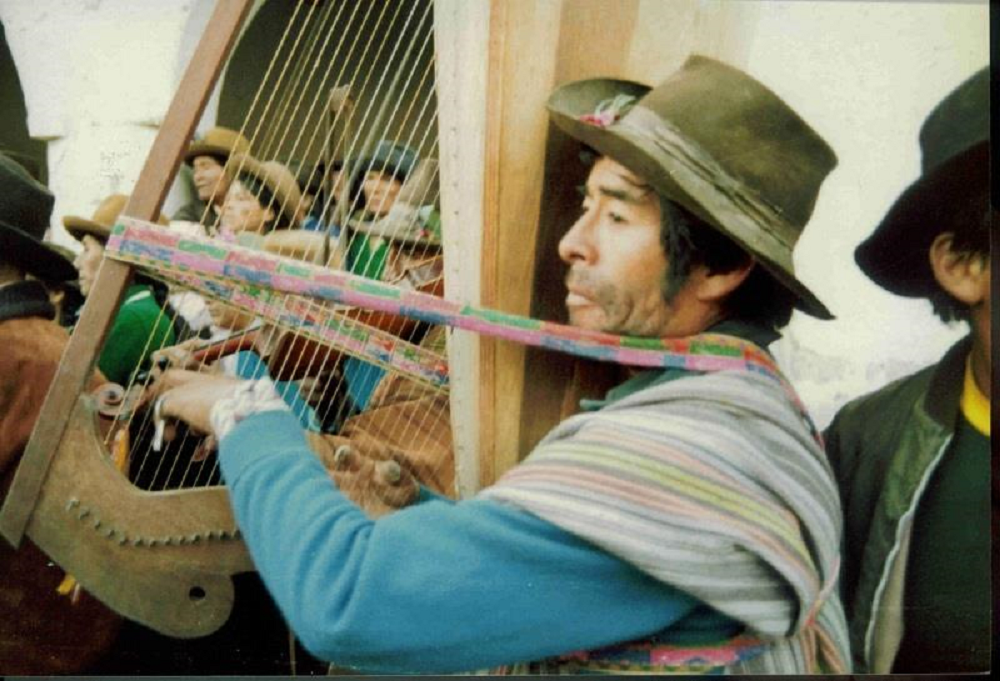

The Peruvian Harp in Motion
Note 036
Home > Blog A Musician's Log > Note 036
A harp carried through the village
In San Francisco de Querco, a village in the Peruvian department of Huancavelica, the harpist participating in Christmas celebrations carries his instrument on his shoulder as he moves with the festive procession. The harp is secured to his body, allowing him to play while accompanying dancers and other participants through the streets and public spaces of the community.
This practice was documented by Claude Ferrier during fieldwork conducted between 2003 and 2008. His research describes a demanding musical role in which the harpist must perform an established repertoire over several days of rehearsals, processions, visits, and competitions (Ferrier, 2008).
The arrangement presents an interesting organological problem. The harp is a relatively large chordophone, ordinarily associated with stationary performance, yet here it must remain playable while its musician walks, changes position, and accompanies a moving group. Supporting its weight, reaching the strings, maintaining rhythmic precision, and responding to the dancers become simultaneous requirements.
Supporting and playing the instrument
The Peruvian harp belongs to the family of frame harps introduced into the Andes during the colonial period. Its triangular construction consists of a resonating body, a neck carrying the tuning pegs, and a pillar connecting the two. In Hornbostel-Sachs classification, conventional diatonic instruments without a mechanism for changing pitch during performance belong to category 322.211.
Peruvian harps are far from uniform. Regional traditions documented by Ferrier (2004) differ in the dimensions of the instrument, number and materials of the strings, tuning, repertoire, and playing techniques. Important regional traditions are found in Ayacucho, Huancavelica, Cusco, Áncash, Junín, and the highlands of Lima.
In seated performance, the harp can rest against the musician's body and the floor. When carried, its weight must instead be supported by the performer. Ferrier describes systems of straps that secure the instrument to the shoulders and torso, leaving the hands available to play.
This arrangement changes the physical conditions of performance. The musician must manage the instrument's balance while maintaining access to the strings, and the position of the harp may influence where those strings are plucked.
Ferrier notes that shoulder-supported playing does not necessarily reverse the functions of the hands. The performer may nevertheless pluck closer to the neck, producing a comparatively dry, percussive sound. The effect has an acoustic explanation: changing the point at which a string is plucked alters the relative strength of its vibrational components.
The instrument's mobility is therefore not merely a matter of transporting it between performances. It can influence the physical technique through which music is produced.
Harps in historical images
Carrying or playing a harp while standing should not automatically be considered a uniquely Andean invention. Harps of different sizes were played in Europe long before their introduction into Spanish America, and historical performers used a variety of playing positions.
Colonial Peruvian illustrations provide additional evidence. The manuscript commonly known as the Códice Martínez Compañón, assembled in the late eighteenth century, includes representations of harps accompanying dances and other musical activities in the Trujillo region.
Manuel Vilas Rodríguez (2022) examined these images and identified different instrumental configurations and playing positions. Some illustrations depict harpists standing with their instruments supported against the body.
The drawings do not always show how the instruments were supported, and their proportions are sometimes simplified. Nevertheless, they document the presence of varied playing positions in colonial Peru, providing an earlier point of comparison for contemporary practices.
Christmas in San Francisco de Querco
Ferrier's research on the Christmas celebrations in Querco offers unusually detailed information about the responsibilities of a mobile harpist.
The musician belongs to a comparsa that includes dancers, ceremonial figures, and people assigned to different tasks during the festivities. His participation is governed by an established repertoire and the requirements of particular dances.
The celebrations extend across several days, with rehearsals, visits, processions, and competitions. Ferrier documents the harpist carrying his instrument during activities known as Entrega, Buena Visita, Adoración, and Caramuza.
The musical demands can be considerable. The performer must memorize numerous pieces and reproduce them at the appropriate moments. The dancers depend on recognizable melodic and rhythmic sequences, and mistakes can interrupt their movements.
Ferrier describes occasions when errors in performance provoked criticism from participants. Musical accuracy was not judged independently of the dance: the musician was expected to know the choreography well enough to provide the required music at the correct moment.
Endurance was another important requirement. The harpist might play repeatedly through long periods of celebration, sometimes continuing late into the night with limited opportunities for rest.
The instrument's mobility allowed the musician to remain with the group as the festivities moved between locations. Yet maintaining that mobility and the accompanying musical activity did not depend on the harpist alone.
The capataz del arpa
One of the most revealing details in Ferrier's account concerns the capataz del arpa, an assistant responsible for helping the harpist fulfil his duties.
The capataz may secure the instrument to the musician's shoulders, help remove it, and carry it when necessary. He also attends to practical needs, including food and drink, and may remind the musician of a melody when required.
In some circumstances, the capataz is himself an experienced harpist who can replace the principal performer.
This position belongs to the organized distribution of responsibilities within the celebration. The assistant's work makes it possible for the harpist to concentrate on demanding musical performances while receiving help with the physical and practical requirements of the instrument.
The relationship is particularly important during prolonged festivities. A harpist who must carry a large instrument, reproduce an extensive repertoire, and coordinate his playing with dancers over several days faces demands quite different from those of a musician performing a short programme in a fixed position.
The capataz provides assistance that may not be evident in a sound recording or a photograph of the harpist playing, but that forms part of the documented performance practice.
The harp in the danza de tijeras
Another important context for the Andean harp is the danza de tijeras, practised particularly in Ayacucho, Huancavelica, and Apurímac.
The dance is performed by specialized groups, commonly called cuadrillas, whose characteristic formation includes a dancer, a violinist, and a harpist. The dancer executes complex steps, acrobatic movements, and displays of physical endurance while striking together two polished metal blades.
Competitive encounters known as atipanakuy involve increasingly demanding sequences and may continue for many hours. The musicians contribute to the performance through an established repertoire whose sections correspond to different movements and stages of the competition.
Manuel Arce Sotelo's research on the violin and danza de tijeras in Lucanas (2006) documents the complexity of these relationships and the specialized musical knowledge required of the performers.
The violin generally has a prominent melodic role, while the harp provides rhythmic and harmonic patterns that interact with the dancer's movements. The precise responsibilities of each musician vary according to regional tradition and repertoire. The harpist must therefore know more than the technical requirements of his instrument. He must understand the musical sequence of the performance and coordinate with the dancer and violinist.
During processions, musicians may accompany the dancers through streets and public spaces. At other moments, particularly during competitions, they may perform from relatively fixed positions.
The danza de tijeras and the Christmas celebrations of Querco consequently provide different examples of the relationship between the harp and movement. Both require close coordination between musicians and dancers, but their instrumental formations, repertoires, and ceremonial responsibilities differ.
In Querco, Ferrier's documentation allows us to observe the practical arrangements that keep a mobile harpist performing, including the straps, the assistance of the capataz del arpa, and the demanding schedule of the celebration. In the danza de tijeras, the harp participates in a different system of musical and choreographic coordination, where mobility is one of several possible conditions of performance.
Readings
- Arce Sotelo, Manuel. 2006. La danza de tijeras y el violín de Lucanas. Lima: Instituto de Etnomusicología, Pontificia Universidad Católica del Perú / Instituto Francés de Estudios Andinos.
- Ferrier, Claude. 2004. El arpa peruana. Lima: Biblioteca Nacional del Perú / Pontificia Universidad Católica del Perú.
- Ferrier, Claude. 2008. Navidad en los Andes: Arpa, comparsas y zapateo en San Francisco de Querco, Huancavelica. Lima: Instituto de Etnomusicología, Pontificia Universidad Católica del Perú / Sociedad Suiza de Etnomusicología.
- Hornbostel, Erich M. von, and Curt Sachs. 1914. "Systematik der Musikinstrumente: Ein Versuch." Zeitschrift für Ethnologie 46: 553–590.
- Ulfe, María Eugenia. 2007. Review of La danza de tijeras y el violín de Lucanas, by Manuel Arce Sotelo. Anthropologica 25: 195–197.
- UNESCO. 2010. "Scissors Dance." Representative List of the Intangible Cultural Heritage of Humanity, inscription 00391.
- Vilas Rodríguez, Manuel. 2022. "Al uso de nuestra tierra. Reflexiones sobre algunos aspectos musicales del Códice Martínez Compañón vistos por un músico práctico." Quodlibet 78: 128–157.